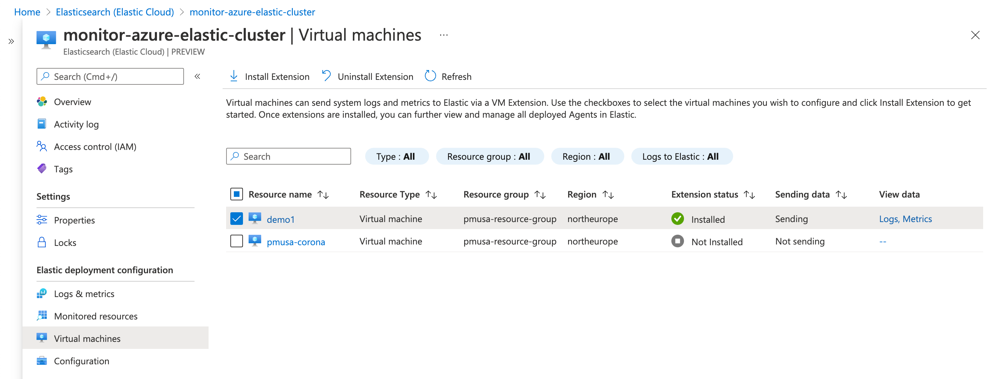

Monitor Microsoft Azure with Beatsedit
In this tutorial, you’ll learn how to monitor your Microsoft Azure deployments using Elastic Observability: Logs and Infrastructure metrics.
What you’ll learnedit
You’ll learn how to:
- Create an Elasticsearch resource in the Azure portal.
- Ingest Azure platform logs using the native integration and view those logs in Kibana.
- Ingest logs and metrics from your virtual machines and view those logs and infrastructure metrics in Kibana.
- Ingest other metrics (such as billing) using the Metricbeat Azure module and view those metrics in Kibana.
Step 1: Create an Elasticsearch resource in the Azure portaledit
Microsoft Azure allows you to find, deploy, and manage Elasticsearch from within the Azure portal. The Microsoft Azure portal integration makes it faster and easier for you to experience the value of Elastic in your Azure environment. Behind the scenes, this process will provision a marketplace subscription with Elastic Cloud.
Create an Elasticsearch resourceedit
-
Log in to the Azure portal.
Ensure your Azure account is configured with Owner access on the subscription you want to deploy Elasticsearch. To learn more about Azure subscriptions, see the Microsoft Azure documentation.
- In the search bar, enter Elasticsearch and then select it.
- Click Create.
- Enter the Subscription, Resource group, and the Resource name.
-
Select a region and then click Review + create.

We will cover logs and infrastructure metrics later in this tutorial.
- To create the Elasticsearch deployment, click Create.
-
After your deployment is complete, click Go to resource. Here you can see and configure your deployment details. To access the cluster, click Kibana.

- To single sign-on directly into Elastic, select your Azure account.
-
To see if there is any available data, click Observability. There should be no data yet, but next, you will ingest logs.

Step 2: Ingest logs using the native integrationedit
To ingest Azure subscription and resource logs into Elastic using the Microsoft Azure native integration is straightforward.
-
On to the Elasticsearch resource page in Azure, click Ingest logs and metrics from Azure Services.

-
Check both checkboxes and click Save.

This configuration can also be applied during the Elastic resource creation. To make the concepts clearer, this tutorial separates the two steps.
Native metrics collection is not fully supported yet and is discussed later.
-
Within Kibana, click Observability until you see some data. This may take a few minutes.

-
To access the Logs app and analyze all your subscription and resource logs, click View in app.

Step 3: Ingest logs and metrics from your virtual machines.edit
-
Go to your Elastic resource and click Virtual machines.
-
Select the VMs that you want to collect logs and metrics from, click Install Extension, and then click OK.

-
Wait until it is installed and sending data (if the list does not update, click Refresh ). To see the logs from the VM in the Logs app, click Logs.

To see the VM metrics dashboard, click Infrastructure.

Both logs and metrics are filtered by the VM name that you selected. To view the data for all the monitored VMs, delete the filter.
Step 4: Ingest other Azure metrics using the Metricbeat Azure moduleedit
Some Azure metrics are not available via the native integration. If you want to collect those metrics, you need to use the Azure Monitor REST API and Metricbeat.
The Azure Monitor REST API allows you to get insights into your Azure resources using different operations. To access the Azure Monitor REST API you need to use the Azure Resource Manager authentication model. Therefore, you must authenticate all requests with Azure Active Directory (Azure AD). You can create the service principal using the Azure portal or Azure PowerShell. Then, you need to grant access permission, which is detailed here. This tutorial uses the Azure portal.
Create an Azure service principaledit
-
Go to the Azure Management Portal. Search and click on Azure Active Directory.

-
Click on App registrations in the navigation pane of the selected Active Directory and then click on New registration.

-
Type the name of your application (this tutorial uses
monitor-azure) and click on Register (leave all the other options with the default value).
Copy the Application (client) ID, and save it for future reference. This id is required to configure Metricbeat to connect to your Azure account.
-
Click on Certificates & secrets. Then, click on New client secret to create a new security key.

-
Type a key description and select a key duration in the expire list. Click on Add to create a client secret. The next page will display the key value under the Value field. Copy the secret and save it (along with your Client ID) for future reference.
This is your only chance to copy this value. You can’t retrieve the key value after you leave the page.
Grant access permission for your service principaledit
After creating the Azure service principal you need to grant it the correct
permission. You need Reader permission to configure Metricbeat to monitor
your services.
-
On Azure Portal, search and click on Subscriptions.

- In the Subscriptions page, click on your subscription.
- Click on Access control (IAM) in the subscription navigation pane.
- Click on Add and select Add role assignment.
- Select the Reader role.
-
In the Select field, type the description name of the configured service principal (
monitor-azure).
- Select the application and click on save to grant the service principal access to your subscription.
Install and configure Metricbeatedit
To configure Metricbeat you need the Elasticsearch cluster details.
-
On the Elasticsearch resource page, click Manage changes in Elastic Cloud.
-
Copy the Cloud ID and keep it safe. You will use it later.

-
Click Security and then click Reset password. Confirm, and copy the password. Keep it safe as you will use it later.

You can run Metricbeat on any machine. This tutorial uses a small Azure VM, B2s (2 vCPUs, 4 GB memory), with an Ubuntu distribution.
Install Metricbeatedit
Download and install Metricbeat.
Version 8.7.0 of Metricbeat has not yet been released.
Version 8.7.0 of Metricbeat has not yet been released.
Version 8.7.0 of Metricbeat has not yet been released.
Version 8.7.0 of Metricbeat has not yet been released.
Version 8.7.0 of Metricbeat has not yet been released.
Set up assetsedit
Metricbeat comes with predefined assets for parsing, indexing, and visualizing your data. Run the following command to load these assets. It may take a few minutes.
./metricbeat setup -e -E 'cloud.id=YOUR_DEPLOYMENT_CLOUD_ID' -E 'cloud.auth=elastic:YOUR_SUPER_SECRET_PASS'
|
Substitute your Cloud ID and an administrator’s |
Setting up Metricbeat is an admin-level task that requires extra privileges. As a best practice, use an administrator role to set up, and a more restrictive role for event publishing (which you will do next).
Configure Metricbeat outputedit
Next, you are going to configure Metricbeat output to Elasticsearch Service.
-
Use the Metricbeat keystore to store secure settings. Store the Cloud ID in the keystore.
./metricbeat keystore create echo -n "<Your Deployment Cloud ID>" | ./metricbeat keystore add CLOUD_ID --stdin
-
To store metrics in Elasticsearch with minimal permissions, create an API key to send data from Metricbeat to Elasticsearch Service. Log into Kibana (you can do so from the Cloud Console without typing in any permissions) and select Management → Dev Tools. Send the following request:
POST /_security/api_key { "name": "metricbeat-monitor", "role_descriptors": { "metricbeat_writer": { "cluster": ["monitor", "read_ilm"], "index": [ { "names": ["metricbeat-*"], "privileges": ["view_index_metadata", "create_doc"] } ] } } } -
The response contains an
api_keyand anidfield, which can be stored in the Metricbeat keystore in the following format:id:api_key.echo -n "IhrJJHMB4JmIUAPLuM35:1GbfxhkMT8COBB4JWY3pvQ" | ./metricbeat keystore add ES_API_KEY --stdin
Make sure you specify the
-nparameter; otherwise, you will have painful debugging sessions due to adding a newline at the end of your API key. -
To see if both settings have been stored, run the following command:
./metricbeat keystore list
-
To configure Metricbeat to output to Elasticsearch Service, edit the
metricbeat.ymlconfiguration file. Add the following lines to the end of the file.cloud.id: ${CLOUD_ID} output.elasticsearch: api_key: ${ES_API_KEY} -
Finally, test if the configuration is working. If it is not working, verify if you used the right credentials and add them again.
./metricbeat test output
Now that the output is working, you are going to set up the input (Azure).
Configure Metricbeat Azure moduleedit
To collect metrics from Microsoft Azure, use the Metricbeat Azure module. This module periodically fetches monitoring metrics from Microsoft Azure using the Azure Monitor REST API.
Extra Azure charges on metric queries my be generated by this module. Please see additional notes about metrics and costs for more details.
-
The azure module configuration needs three ids and one secret. Use the commands below to store each one of them in the keystore.
echo -n "<client_id>" | ./metricbeat keystore add AZURE_CLIENT_ID --stdin echo -n "<client_secret>" | ./metricbeat keystore add AZURE_CLIENT_SECRET --stdin echo -n "<tenant_id>" | ./metricbeat keystore add AZURE_TENANT_ID --stdin echo -n "<subscription_id>" | ./metricbeat keystore add AZURE_SUBSCRIPTION_ID --stdin
You can find the
tenant_idin the main Azure Active Directory page. You can find thesubscription_idin the main Subscriptions page. -
Enable the Azure module.
./metricbeat modules enable azure
-
Edit the
modules.d/azure.ymlfile to collectbillingmetrics. -
To check if Metricbeat can collect data, test the input by running the following command:
./metricbeat test modules azure
Metricbeat will print
billingmetrics to the terminal, if the setup is correct.If it returns a timeout error, try again. The
test modulestimeout is short. -
When the input and output are ready, start Metricbeat to collect the data.
./metricbeat -e
-
Finally, log into Kibana and open the [Metricbeat Azure] Billing overview dashboard. Keep in mind it collects data every 24 hours.